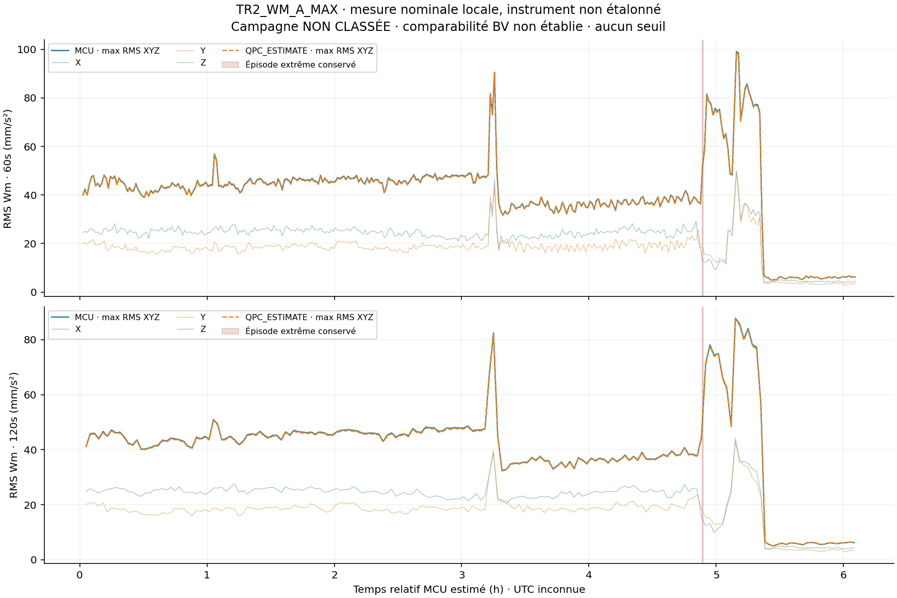
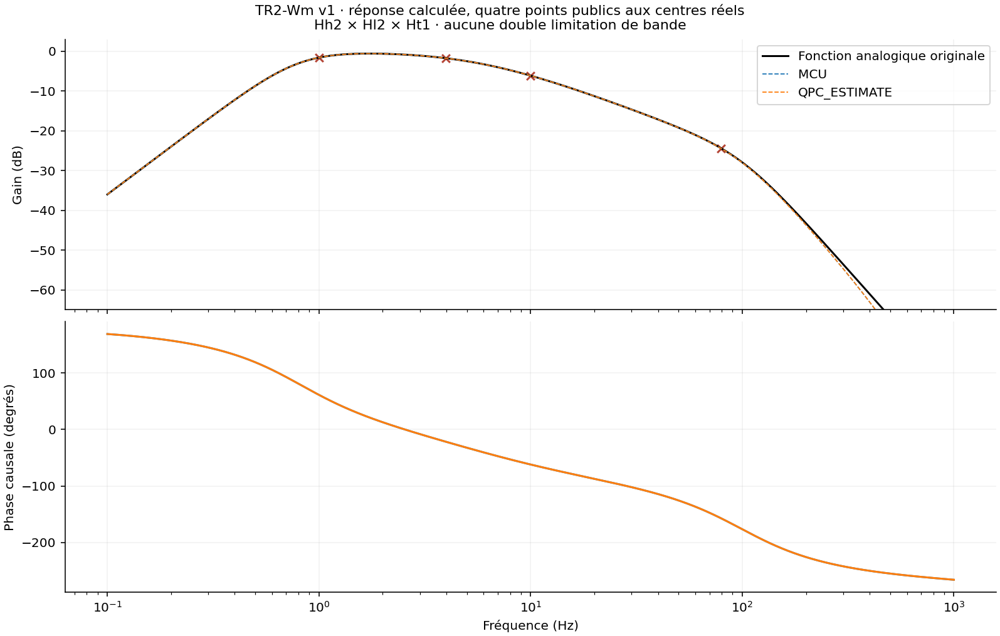

Le pic source de7,677g nominal reste dans le résultat principal. Son exclusion sur30s est un diagnostic séparé, jamais une correction silencieuse.

La vitesse équivalente0,028×a_w dépend entièrement de la même grandeur ; elle n'est pas une deuxième mesure indépendante.
Synthèse et limites · Valeurs non arrondies · Sensibilités · Étude BV après validation · Preuves et provenance